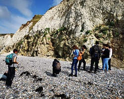
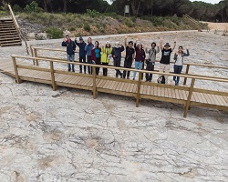
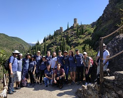
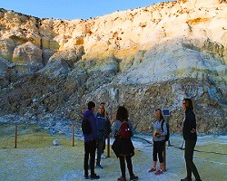
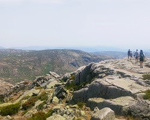
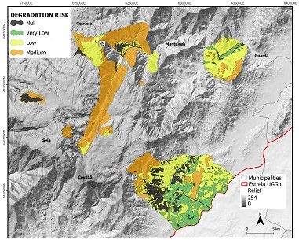

Erasmus Mundus Joint Master Degree Pangea
The Erasmus Mundus Joint Master Degree Pangea is a two-year master's program with a consortium of four recognized European universities and associated partners. Its goal is to equip students with expertise in one of three specialized fields of Earth Sciences: Palaeobiology, Geoconservation, and Applied Palaeontology (read more).
My Pangea master's journey commenced in France, where I completed the first semester (Term 1) at the University of Lille. During this period, I enhanced my foundation in geosciences, including basin analysis (sedimentology and sequence stratigraphy, biostratigraphy) and geoconservation. In addition to participating in integration events, such as compulsory workshops and seminars by guest speakers, I also took part in field trips. You can find a detailed syllabus for the first semester in Lille here.
The second term took place at the University of Minho in Braga, Portugal. During this period, I enrolled in advanced courses on geoconservation, covering topics such as geotourism and geoparks, geological heritage, and protected areas (find out more). Additionally, I actively participated in field trips in Portugal, visiting various sites and engaging in discussions about their management and vulnerability.
Before the start of the third semester, my colleagues and I went on fieldwork in Carcassonne, southern France, accompanied by the program coordinator, the project officer, two professors from the University of Minho, and one from Uppsala University (Sweden). The fortified city of Carcassonne stands as an outstanding example of a medieval city listed as UNESCO World Heritage site. For one week (June 27 to July 2, 2022), we visited several interesting sites and delved into the geological aspects of the region (read more).
The third semester (Term 3A) took place in Athens, Greece, where I attended courses with a strong focus on geomorphology and georisk, alongside the management of coastal zones, which integrate the specialization 'Climatic Variations and Impacts on Environment' of the Postgraduate Programme 'Earth Sciences and Environment' from the National and Kapodistrian University of Athens. A detailed syllabus is available here.
Master's Thesis

The final semester of the master's degree (Term 3B) was dedicated to writing the thesis, which was preceded by a 2-month internship period at Estrela UNESCO Global Geopark in Portugal. During this time, I actively participated in conservation initiatives and educational outreach programs within the local community. Additionally, I assisted in the promotion of the Interpretative Centre of Serra da Estrela to tourists and visitors, immersing myself in the cultural and natural heritage of the region.
Unfortunately, a large fire affected Serra da Estrela during the summer of 2022, which led to the theme of the thesis on the risk of degradation of geological heritage by forest fires. This topic remains underexplored but holds great relevance for management strategies and conservation efforts. Cartographic procedures were carried out to precisely define the boundaries of some sites and a forest fire degradation risk map was obtained as the primary outcome of this study. Upon completing the thesis and its public defense at the University of Minho in July 2023, I was awarded a Master's degree in Earth and Planetary Sciences, and the Environment from the University of Lille with with highest honour.
Master's Thesis